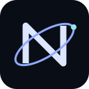

A space-inspired browser desktop, powered by AnuraOS from Mercury Workshop. AnuraOS copyright © Mercury Workshop. Original copyright and third-party notices remain in the source.
This modified operating environment is distributed under GNU AGPL version 3. You can inspect and download the corresponding source, including build scripts, at Shinobiscripter/NebulaOS-. The running build identifier is listed in About NebulaHub. Operators must publish the source for the version they serve, including their own changes.
See upstream credits for v86, Dreamland, Filer, Scramjet and other projects. Their licenses and notices remain applicable.
The game launchers were migrated from NebulaHub-2. Game software, artwork, names and remotely hosted assets remain the property of their respective creators and retain their separate terms. The OS license does not grant rights to third-party game assets. The catalog records the exact source commit and launcher hashes.
Files, installed apps, settings, favorites and recent game history are stored in your browser. Clearing site data deletes this installation. Use Files to export anything important. Enable offline support in Settings to download OS assets. Most games still need their external providers.
Linux is optional and is installed through Settings. Network access inside the browser and Linux subsystem requires a Wisp relay, configured in Settings. Netlify hosts the static desktop; it does not host that WebSocket service.